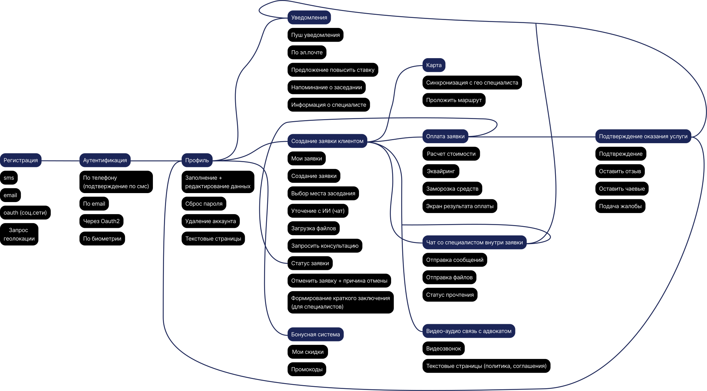
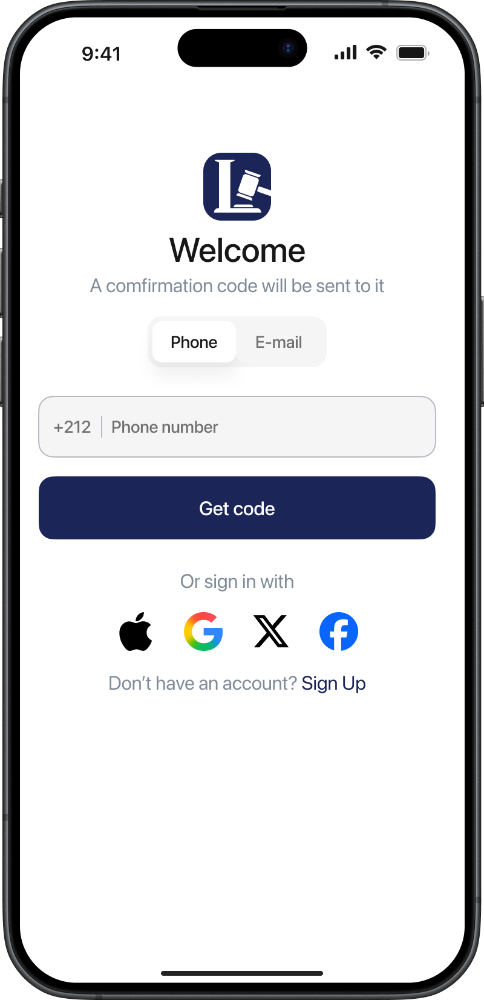
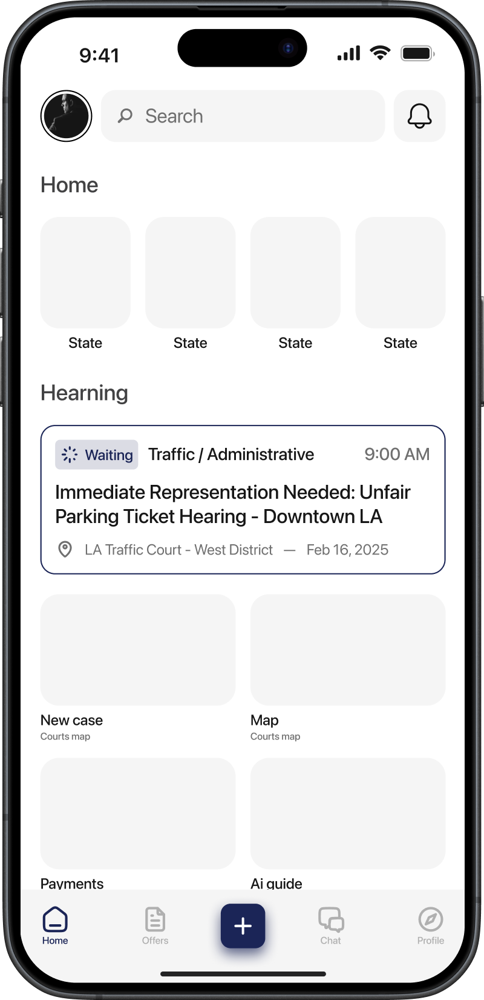
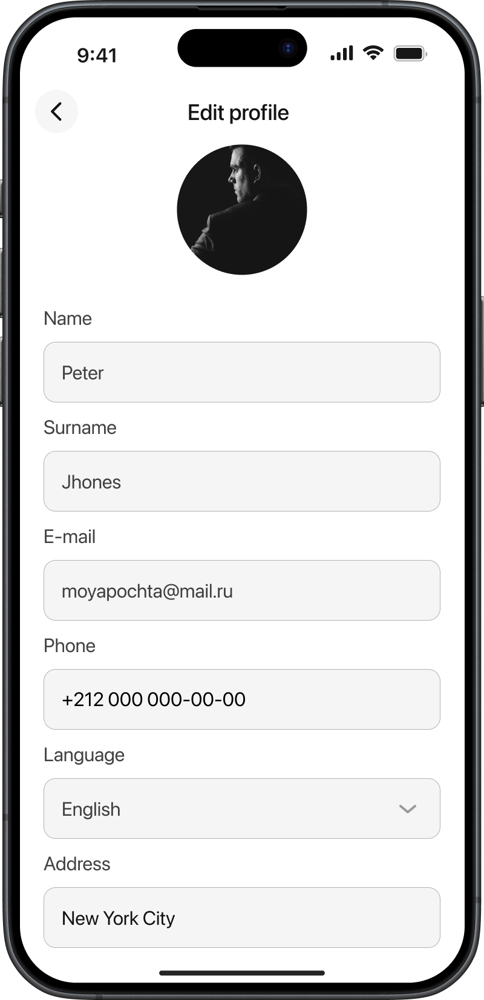
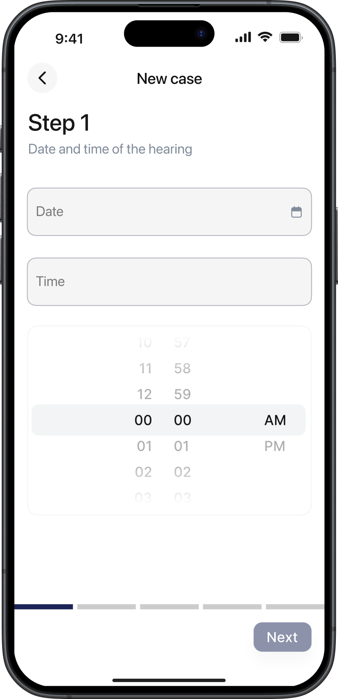
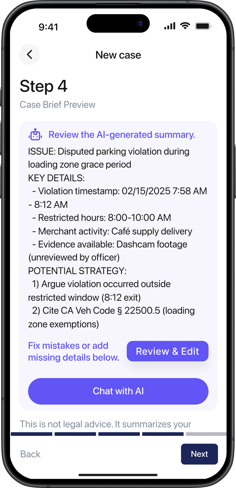
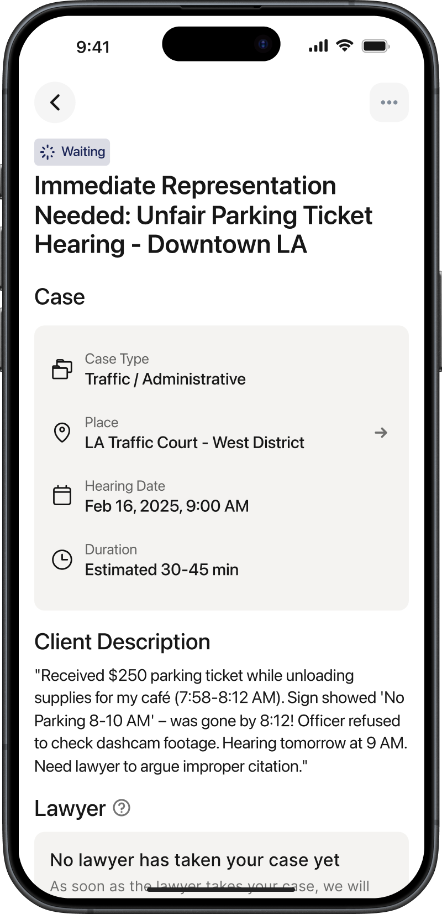

Создать простой и понятный интерфейс, который позволяет клиенту быстро подать заявку на судебное дело без необходимости разбираться в сложных юридических процессах.
Case 02
Lawber
Мобильное приложение для адвокатов и клиентов, которое по принципу Uber упрощает процесс назначения адвоката для судебных заседаний.
Для клиента участие в судебном процессе — это стрессовый сценарий, в котором не хватает понятности, прозрачности и привычных цифровых паттернов.
Конверсия в создание заявки выросла на +22%, время до подачи сократилось на 35%, а DAU среди зарегистрированных пользователей вырос на +17%.
Интерфейс был выстроен вокруг ключевого пользовательского сценария — подачи заявки через карту. Пользователь выбирает суд и время заседания, после чего формирует заявку в несколько простых шагов. Такой подход делает процесс наглядным и приближенным к привычным цифровым паттернам.
Также пользователю были даны инструменты полного контроля над процессом: выбор суда и времени через карту, отслеживание статусов дела, уведомления и прозрачная система оплаты. Это снижает барьер входа и помогает принять сервис с первого касания.
Была реализована система статусов, которая помогает понять, на каком этапе находится дело. Это уменьшает неопределенность и усиливает доверие к продукту.
Для усиления ощущения безопасности внедрена механика скрытия личности адвоката до момента, близкого к заседанию. Это защищает обе стороны и при этом не ломает пользовательский опыт.
В личном кабинете пользователь может управлять своими заявками, отслеживать оплату и быстро возвращаться к текущим делам. User flow стал основой кейса и показал, как логика сервиса собирается в единый маршрут для клиента.







Silkway
Next case →
TAXI TROIKA